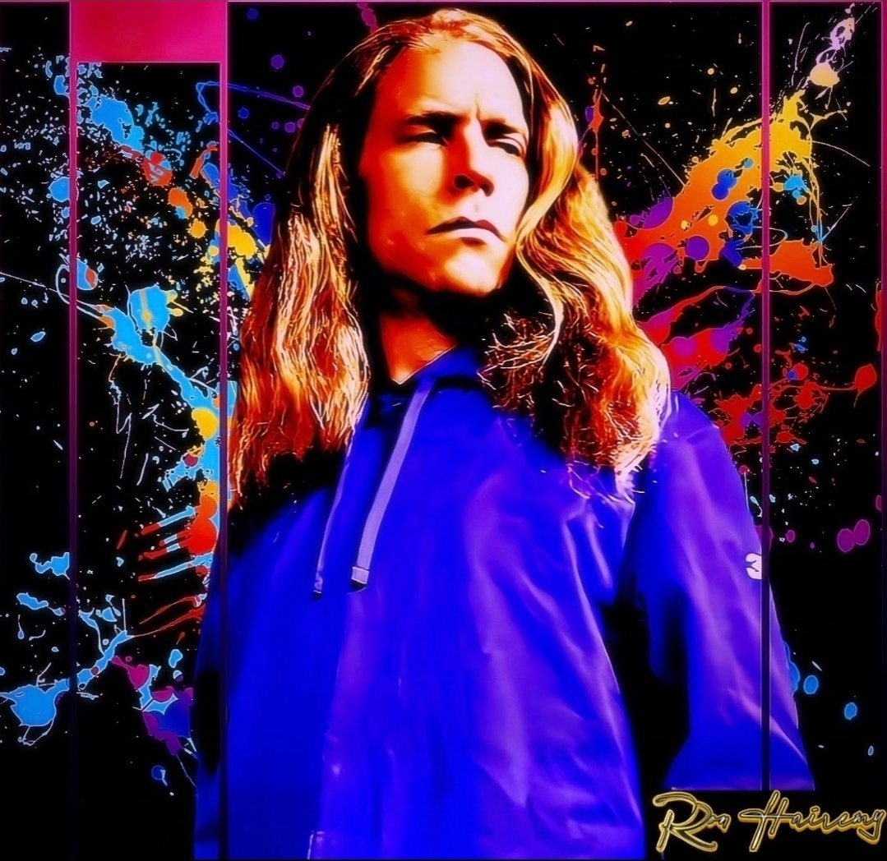
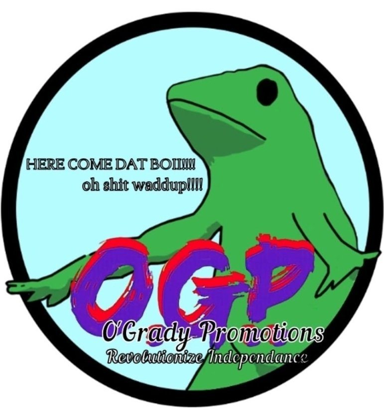

Ron Hairemy

Ron Hairemy ko te whanaketanga o tētahi tangi, he tuakiri puoro i whānau mai i te hiahia. Ahakoa he wāhi ngākau hōhonu tonu, ka neke tēnei wā i te arotahi ki te tupuranga whaiaro me te whakatete pūnahanaha. Ka waiho te mua ki muri, ā, ka tautuhia e te whakatete me te whakahoki i a koe anō, kāore he whakapāha. Ka tangohia e te puoro te taumaha ngākau tawhito kia tukuna he kaha tū pakari ake, i hangaia i runga i ngā akoranga i whiwhi uaua me ngā tikanga o te ora ngākau. Me neke a Craigles O’Grady kia tino puta mai ai tēnei reo.
The Death of Craigles ko te album e tanu ana i te mua, te tupuranga, te whakatete, me te whakahoki i a koe anō. Ā, ko te waiata acapella tuatahi “Momentarily” kei te mahi: he waiata mō te aroha ki a koe anō, kia nui rawa, ka ringihia ki roto i ngā kapu kau, kaua ko te tahu i a koe anō hei whakamahana i tētahi atu.

© O’Grady Promotions